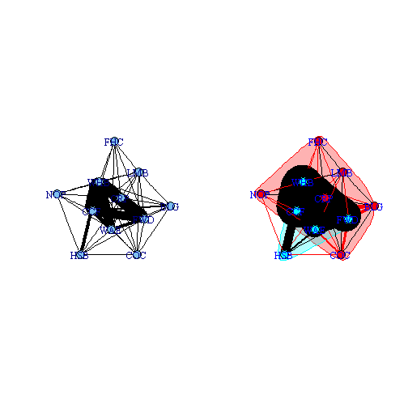
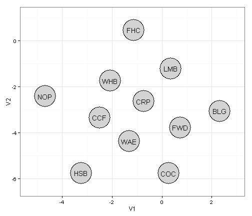
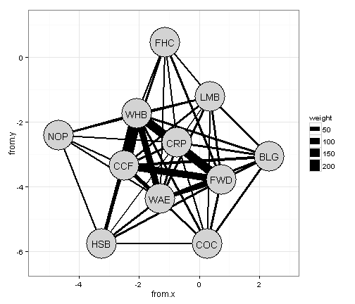
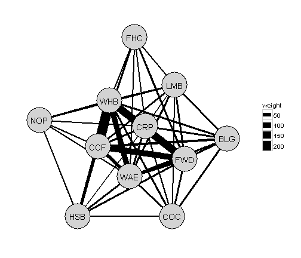
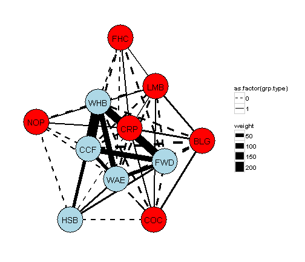

Plotting igraph objects with ggplot2
I have been working collaborating on a project with Dustin Martin using network theory.
We have are utilizing the igraph package in R, which ultimately produces graphs of networks.
Including these graphs in presentations and publications has been difficult because they are difficult to customize (at least with my understanding of them). I am sure it is possible to get the figures the way you want them using the plot function in igraph but I feel much more comfortable working with ggplot, plus I have themes created for ggplot. So I explored a way to create the igraph plots in ggplot.
igraph plots
First, I will bring in the data, which is a matrix of species relative abundances. Columns are the species and each row is an observation. Here is a snapshot of what the data looks like
head(caught.wide.2)## BLG CCF COC CRP FHC FWD HSB LMB NOP WAE WHB
## 6915.2009-04-07.8 0 0.2222 0 0 0 0 0.00000 0 0 0.0 0
## 6915.2009-04-11.14 0 0.0000 0 0 0 0 0.00000 0 0 0.4 0
## 6915.2009-04-11.17 0 0.0000 0 0 0 0 0.09091 0 0 0.0 0
## 6915.2009-04-13.22 0 0.2500 0 0 0 0 0.00000 0 0 0.0 0
## 6915.2009-04-14.26 0 0.5000 0 0 0 0 0.00000 0 0 0.0 0
## 6915.2009-04-14.30 0 0.1429 0 0 0 0 0.00000 0 0 0.0 0Load the igraph library and run through the first few steps of generating the network
library(igraph)
caught.inc <- graph.incidence(caught.wide.2, weighted = TRUE) #make data into a bipartite graph object
obs.parties.all <- bipartite.projection(caught.inc)[[1]]
obs.spp.all <- bipartite.projection(caught.inc)[[2]]Plotting these two plots produces okay graphs, but as I mentioned earlier, they are not great.
op <- par(mfrow = c(1, 2))
fr.all <- layout.fruchterman.reingold(obs.spp.all)
plot(obs.spp.all, layout = fr.all, edge.color = "black", edge.width = E(obs.spp.all)$weight *
0.1, vertex.label = V(obs.spp.all)$name)
obs.sg.all <- fastgreedy.community(obs.spp.all, weights = E(obs.spp.all)$weight)
plot(obs.sg.all, obs.spp.all, layout = fr.all, edge.width = E(obs.spp.all)$weight *
0.25, vertex.label = V(obs.spp.all)$name, vertex.label.color = "blue")
par(op)
Create graphs in ggplot
Okay first lets extract the data to produce the basic graph of the network on the left. ggplot needs the data as a data.frame so extract the data and coerce it to a data.frame
fr.all.df <- as.data.frame(fr.all) ## convert the layout to a data.frame
fr.all.df$species <- colnames(caught.wide.2) ## add in the species codes
fr.all.df ## display the x (V1) and y (V2) coordinates for each of the nodes.## V1 V2 species
## 1 2.3192 -3.0746 BLG
## 2 -2.4960 -3.3497 CCF
## 3 0.2719 -5.7700 COC
## 4 -0.7398 -2.6457 CRP
## 5 -1.1411 0.4478 FHC
## 6 0.7329 -3.7887 FWD
## 7 -3.2541 -5.7682 HSB
## 8 0.3530 -1.2192 LMB
## 9 -4.6923 -2.4240 NOP
## 10 -1.3122 -4.3867 WAE
## 11 -2.0786 -1.7555 WHBNow we have all the coordinates for the nodes in the plot, we can display it in ggplot
library(ggplot2)
ggplot() +
geom_point(data=fr.all.df,aes(x=V1,y=V2),size=21,colour="black") + # adds a black border around the nodes
geom_point(data=fr.all.df,aes(x=V1,y=V2),size=20,colour="lightgrey") +
geom_text(data=fr.all.df,aes(x=V1,y=V2,label=species)) + # add the node labels
scale_x_continuous(expand=c(0,1))+ # expand the x limits
scale_y_continuous(expand=c(0,1))+ # expand the y limits
theme_bw() # use the ggplot black and white theme
Now that we have the nodes in the right place, lets draw the connections between the nodes
g <- get.data.frame(obs.spp.all) # get the edge information using the get.data.frame function
head(g)## from to weight
## 1 BLG CCF 20
## 2 BLG COC 6
## 3 BLG WHB 4
## 4 BLG WAE 8
## 5 BLG LMB 7
## 6 BLG CRP 6
g$from.x <- fr.all.df$V1[match(g$from, fr.all.df$species)] # match the from locations from the node data.frame we previously connected
g$from.y <- fr.all.df$V2[match(g$from, fr.all.df$species)]
g$to.x <- fr.all.df$V1[match(g$to, fr.all.df$species)] # match the to locations from the node data.frame we previously connected
g$to.y <- fr.all.df$V2[match(g$to, fr.all.df$species)]
g## from to weight from.x from.y to.x to.y
## 1 BLG CCF 20 2.3192 -3.0746 -2.4960 -3.3497
## 2 BLG COC 6 2.3192 -3.0746 0.2719 -5.7700
## 3 BLG WHB 4 2.3192 -3.0746 -2.0786 -1.7555
## 4 BLG WAE 8 2.3192 -3.0746 -1.3122 -4.3867
## 5 BLG LMB 7 2.3192 -3.0746 0.3530 -1.2192
## 6 BLG CRP 6 2.3192 -3.0746 -0.7398 -2.6457
## 7 BLG FWD 13 2.3192 -3.0746 0.7329 -3.7887
## 8 CCF FWD 117 -2.4960 -3.3497 0.7329 -3.7887
## 9 CCF COC 9 -2.4960 -3.3497 0.2719 -5.7700
## 10 CCF WHB 211 -2.4960 -3.3497 -2.0786 -1.7555
## 11 CCF CRP 15 -2.4960 -3.3497 -0.7398 -2.6457
## 12 CCF LMB 7 -2.4960 -3.3497 0.3530 -1.2192
## 13 CCF WAE 55 -2.4960 -3.3497 -1.3122 -4.3867
## 14 CCF HSB 11 -2.4960 -3.3497 -3.2541 -5.7682
## 15 CCF NOP 3 -2.4960 -3.3497 -4.6923 -2.4240
## 16 CCF FHC 6 -2.4960 -3.3497 -1.1411 0.4478
## 17 COC FWD 12 0.2719 -5.7700 0.7329 -3.7887
## 18 COC WHB 4 0.2719 -5.7700 -2.0786 -1.7555
## 19 COC HSB 2 0.2719 -5.7700 -3.2541 -5.7682
## 20 COC LMB 3 0.2719 -5.7700 0.3530 -1.2192
## 21 COC WAE 2 0.2719 -5.7700 -1.3122 -4.3867
## 22 COC CRP 1 0.2719 -5.7700 -0.7398 -2.6457
## 23 CRP WHB 41 -0.7398 -2.6457 -2.0786 -1.7555
## 24 CRP LMB 3 -0.7398 -2.6457 0.3530 -1.2192
## 25 CRP WAE 9 -0.7398 -2.6457 -1.3122 -4.3867
## 26 CRP FWD 7 -0.7398 -2.6457 0.7329 -3.7887
## 27 CRP NOP 3 -0.7398 -2.6457 -4.6923 -2.4240
## 28 CRP HSB 2 -0.7398 -2.6457 -3.2541 -5.7682
## 29 CRP FHC 1 -0.7398 -2.6457 -1.1411 0.4478
## 30 FHC FWD 4 -1.1411 0.4478 0.7329 -3.7887
## 31 FHC WAE 1 -1.1411 0.4478 -1.3122 -4.3867
## 32 FHC WHB 2 -1.1411 0.4478 -2.0786 -1.7555
## 33 FHC LMB 1 -1.1411 0.4478 0.3530 -1.2192
## 34 FWD HSB 6 0.7329 -3.7887 -3.2541 -5.7682
## 35 FWD WHB 161 0.7329 -3.7887 -2.0786 -1.7555
## 36 FWD WAE 49 0.7329 -3.7887 -1.3122 -4.3867
## 37 FWD LMB 4 0.7329 -3.7887 0.3530 -1.2192
## 38 HSB WAE 8 -3.2541 -5.7682 -1.3122 -4.3867
## 39 HSB WHB 46 -3.2541 -5.7682 -2.0786 -1.7555
## 40 HSB NOP 1 -3.2541 -5.7682 -4.6923 -2.4240
## 41 LMB WAE 6 0.3530 -1.2192 -1.3122 -4.3867
## 42 LMB WHB 6 0.3530 -1.2192 -2.0786 -1.7555
## 43 LMB NOP 1 0.3530 -1.2192 -4.6923 -2.4240
## 44 NOP WHB 5 -4.6923 -2.4240 -2.0786 -1.7555
## 45 NOP WAE 1 -4.6923 -2.4240 -1.3122 -4.3867
## 46 WAE WHB 120 -1.3122 -4.3867 -2.0786 -1.7555and plot it out.
ggplot() +
geom_segment(data=g,aes(x=from.x,xend = to.x, y=from.y,yend = to.y,size=weight),colour="black") +
geom_point(data=fr.all.df,aes(x=V1,y=V2),size=21,colour="black") + # adds a black border around the nodes
geom_point(data=fr.all.df,aes(x=V1,y=V2),size=20,colour="lightgrey") +
geom_text(data=fr.all.df,aes(x=V1,y=V2,label=species)) + # add the node labels
scale_x_continuous(expand=c(0,1))+ # expand the x limits
scale_y_continuous(expand=c(0,1))+ # expand the y limits
theme_bw() # use the ggplot black and white theme
Lets mess with the themes and remove the grid lines and axis labels etc.
ggplot() +
geom_segment(data=g,aes(x=from.x,xend = to.x, y=from.y,yend = to.y,size=weight),colour="black") +
geom_point(data=fr.all.df,aes(x=V1,y=V2),size=21,colour="black") + # adds a black border around the nodes
geom_point(data=fr.all.df,aes(x=V1,y=V2),size=20,colour="lightgrey") +
geom_text(data=fr.all.df,aes(x=V1,y=V2,label=species)) + # add the node labels
scale_x_continuous(expand=c(0,1))+ # expand the x limits
scale_y_continuous(expand=c(0,1))+ # expand the y limits
theme_bw()+ # use the ggplot black and white theme
theme(
axis.text.x = element_blank(), # remove x-axis text
axis.text.y = element_blank(), # remove y-axis text
axis.ticks = element_blank(), # remove axis ticks
axis.title.x = element_blank(), # remove x-axis labels
axis.title.y = element_blank(), # remove y-axis labels
panel.background = element_blank(),
panel.border =element_blank(),
panel.grid.major = element_blank(), #remove major-grid labels
panel.grid.minor = element_blank(), #remove minor-grid labels
plot.background = element_blank())
If we wanted to incorporate some of the elements of the community detection algorithms present in the igraph on the right. We can make elements in the one group red and the other blue. Connections within a group will be a solid line and between groups a dashed line.
grouping <- data.frame(species = obs.sg.all$names, group = obs.sg.all$membership) #create a data.frame of species and group membership
g$grp.from <- grouping$group[match(g$from, grouping$species)] # match group membership within the g data.frame for from and to nodes
g$grp.to <- grouping$group[match(g$to, grouping$species)]
g$grp.type <- ifelse(g$grp.from == g$grp.to, 1, 0) # if from and to nodes are the in same group then type is 1 else 0
g # display the additions## from to weight from.x from.y to.x to.y grp.from grp.to
## 1 BLG CCF 20 2.3192 -3.0746 -2.4960 -3.3497 1 2
## 2 BLG COC 6 2.3192 -3.0746 0.2719 -5.7700 1 1
## 3 BLG WHB 4 2.3192 -3.0746 -2.0786 -1.7555 1 2
## 4 BLG WAE 8 2.3192 -3.0746 -1.3122 -4.3867 1 2
## 5 BLG LMB 7 2.3192 -3.0746 0.3530 -1.2192 1 1
## 6 BLG CRP 6 2.3192 -3.0746 -0.7398 -2.6457 1 1
## 7 BLG FWD 13 2.3192 -3.0746 0.7329 -3.7887 1 2
## 8 CCF FWD 117 -2.4960 -3.3497 0.7329 -3.7887 2 2
## 9 CCF COC 9 -2.4960 -3.3497 0.2719 -5.7700 2 1
## 10 CCF WHB 211 -2.4960 -3.3497 -2.0786 -1.7555 2 2
## 11 CCF CRP 15 -2.4960 -3.3497 -0.7398 -2.6457 2 1
## 12 CCF LMB 7 -2.4960 -3.3497 0.3530 -1.2192 2 1
## 13 CCF WAE 55 -2.4960 -3.3497 -1.3122 -4.3867 2 2
## 14 CCF HSB 11 -2.4960 -3.3497 -3.2541 -5.7682 2 2
## 15 CCF NOP 3 -2.4960 -3.3497 -4.6923 -2.4240 2 1
## 16 CCF FHC 6 -2.4960 -3.3497 -1.1411 0.4478 2 1
## 17 COC FWD 12 0.2719 -5.7700 0.7329 -3.7887 1 2
## 18 COC WHB 4 0.2719 -5.7700 -2.0786 -1.7555 1 2
## 19 COC HSB 2 0.2719 -5.7700 -3.2541 -5.7682 1 2
## 20 COC LMB 3 0.2719 -5.7700 0.3530 -1.2192 1 1
## 21 COC WAE 2 0.2719 -5.7700 -1.3122 -4.3867 1 2
## 22 COC CRP 1 0.2719 -5.7700 -0.7398 -2.6457 1 1
## 23 CRP WHB 41 -0.7398 -2.6457 -2.0786 -1.7555 1 2
## 24 CRP LMB 3 -0.7398 -2.6457 0.3530 -1.2192 1 1
## 25 CRP WAE 9 -0.7398 -2.6457 -1.3122 -4.3867 1 2
## 26 CRP FWD 7 -0.7398 -2.6457 0.7329 -3.7887 1 2
## 27 CRP NOP 3 -0.7398 -2.6457 -4.6923 -2.4240 1 1
## 28 CRP HSB 2 -0.7398 -2.6457 -3.2541 -5.7682 1 2
## 29 CRP FHC 1 -0.7398 -2.6457 -1.1411 0.4478 1 1
## 30 FHC FWD 4 -1.1411 0.4478 0.7329 -3.7887 1 2
## 31 FHC WAE 1 -1.1411 0.4478 -1.3122 -4.3867 1 2
## 32 FHC WHB 2 -1.1411 0.4478 -2.0786 -1.7555 1 2
## 33 FHC LMB 1 -1.1411 0.4478 0.3530 -1.2192 1 1
## 34 FWD HSB 6 0.7329 -3.7887 -3.2541 -5.7682 2 2
## 35 FWD WHB 161 0.7329 -3.7887 -2.0786 -1.7555 2 2
## 36 FWD WAE 49 0.7329 -3.7887 -1.3122 -4.3867 2 2
## 37 FWD LMB 4 0.7329 -3.7887 0.3530 -1.2192 2 1
## 38 HSB WAE 8 -3.2541 -5.7682 -1.3122 -4.3867 2 2
## 39 HSB WHB 46 -3.2541 -5.7682 -2.0786 -1.7555 2 2
## 40 HSB NOP 1 -3.2541 -5.7682 -4.6923 -2.4240 2 1
## 41 LMB WAE 6 0.3530 -1.2192 -1.3122 -4.3867 1 2
## 42 LMB WHB 6 0.3530 -1.2192 -2.0786 -1.7555 1 2
## 43 LMB NOP 1 0.3530 -1.2192 -4.6923 -2.4240 1 1
## 44 NOP WHB 5 -4.6923 -2.4240 -2.0786 -1.7555 1 2
## 45 NOP WAE 1 -4.6923 -2.4240 -1.3122 -4.3867 1 2
## 46 WAE WHB 120 -1.3122 -4.3867 -2.0786 -1.7555 2 2
## grp.type
## 1 0
## 2 1
## 3 0
## 4 0
## 5 1
## 6 1
## 7 0
## 8 1
## 9 0
## 10 1
## 11 0
## 12 0
## 13 1
## 14 1
## 15 0
## 16 0
## 17 0
## 18 0
## 19 0
## 20 1
## 21 0
## 22 1
## 23 0
## 24 1
## 25 0
## 26 0
## 27 1
## 28 0
## 29 1
## 30 0
## 31 0
## 32 0
## 33 1
## 34 1
## 35 1
## 36 1
## 37 0
## 38 1
## 39 1
## 40 0
## 41 0
## 42 0
## 43 1
## 44 0
## 45 0
## 46 1
fr.all.df$grp <- grouping$group[match(fr.all.df$species, grouping$species)] # add group type to node data.frame
ggplot() +
geom_segment(data=g,aes(x=from.x,xend = to.x, y=from.y,yend = to.y,size=weight,linetype=as.factor(grp.type)),colour="black") + # add line type
geom_point(data=fr.all.df,aes(x=V1,y=V2),size=21,colour="black") + # adds a black border around the nodes
geom_point(data=fr.all.df,aes(x=V1,y=V2,colour=as.factor(grp)),size=20,show_guide=FALSE) +
geom_text(data=fr.all.df,aes(x=V1,y=V2,label=species)) + # add the node labels
scale_colour_manual(values=c("1"="red","2"="lightblue"))+ # add colour scaling for group membership
scale_linetype_manual(values=c("0"="dashed","1"="solid"))+ # add linteyp scaling for within and between groups
scale_x_continuous(expand=c(0,1))+ # expand the x limits
scale_y_continuous(expand=c(0,1))+ # expand the y limits
theme_bw()+ # use the ggplot black and white theme
theme(
axis.text.x = element_blank(), # remove x-axis text
axis.text.y = element_blank(), # remove y-axis text
axis.ticks = element_blank(), # remove axis ticks
axis.title.x = element_blank(), # remove x-axis labels
axis.title.y = element_blank(), # remove y-axis labels
panel.background = element_blank(),
panel.border =element_blank(),
panel.grid.major = element_blank(), #remove major-grid labels
panel.grid.minor = element_blank(), #remove minor-grid labels
plot.background = element_blank())